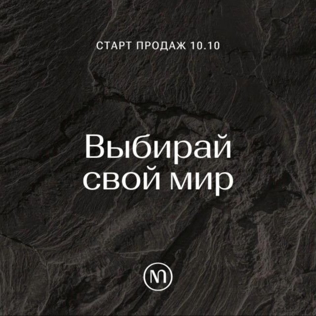
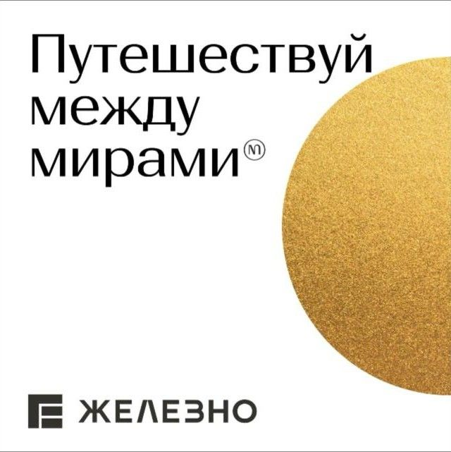

Скоро. Ваш новый мир. Закрытое пространство, где шум города растворяется в тишине. Где роскошь выражается не в демонстрации, а в ощущении — безопасности, уединённости, покоя.
17 сентября 2025
Как написали бы сейчас: Скоро. Ваш новый мир: закрытый двор, тишина и лес рядом. Роскошь, которую чувствуют, а не показывают.
Позиционирование в первом же касании

Ж
Железно | Ижевск
Три стихии
Три металла. Три стихии. Три характера. Золото — энергия огня. Серебро — стихия воды. Бронза — стихия земли.
24 сентября 2025
Как написали бы сейчас: Золото — огонь, Серебро — вода, Бронза — земля. Три башни, три характера. Какой мир ваш?
Архитектура объяснена через характер
Завтра откроются двери в новые МИРЫ. Вы узнаете, где появятся «МИРЫ» — и почему этот адрес станет особенным.
9 октября 2025
Как написали бы сейчас: Завтра откроем дверь и назовём адрес. 10 октября — старт продаж «Миров».
Адрес скрыт до старта — интрига
Добро пожаловать в «МИРЫ». Три башни, три характера, три металла. Архитектура бросает вызов монотонной городской застройке.
10 октября 2025
Как написали бы сейчас: Добро пожаловать в «Миры». Три башни у Холмогоровского леса, двор без машин, лобби с камином.
Запуск с трансляцией презентации